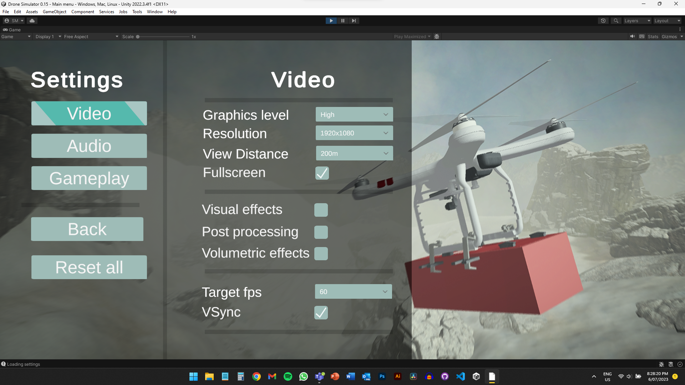

It's been a while since the last update and a lot has happened since then.
I have been mainly developing the user interface but also continued to work on the landscape, river/lakes, snow, day/night cycle and automating aspects of level design like placing rocks and trees.
What Is a User Interface?
UI refers to all the elements on screen that allow the user to interact with the application. It commonly consists of buttons, text, sliders, icons, menus etc.
I originally set up a simple UI at the beginning but it was cobbled together and had several technical limitations.
All of these problems made adding a new UI a slow and increasingly complex process. So, I decided to start again. Here are some samples of parts of the project that have received (mostly) working UI. You can click on the images below to view a short preview of how they function.

Accounts and Profile Management
NB: I recommend clicking on the 'out arrow' to better view aswell as increasing the quality it to 1080p (default 720p)
Main Menu
Drone and Takeoff Location Selector
Style and Feel
One feature that was essential to include with this UI update was a style guide system. This allowed me to change all the UI aesthetics from one place, keeping the UI colours and sizes coherent and flexible. Unity (the game engine I'm using) doesn't come with a built-in style guide/theme system, so I had to code my own. With this system, I plan to include an accessibility option to switch from the default system to one that has extra contrast or is colour blind friendly.
Currently all the colours and shapes are just placeholders as I haven't come up with a unique UI style. This will come with time as the project gets developed.
Other Features
A common feature that most applications have is a tooltip. This is simply a message that gets displayed when hovering over certain objects.

I also added a generic dialogue box which can be customised to ask questions or get inputs from the user (text field, checkbox, slider)

Things to Still Add or Consider
-
World map
-
Drone HUD (UI when flying a drone)
-
More interesting loading screen, currently it's just a randomly chosen image with a boring progress bar
-
Better font type
That's all for this update, if you have any feedback then please let me know.